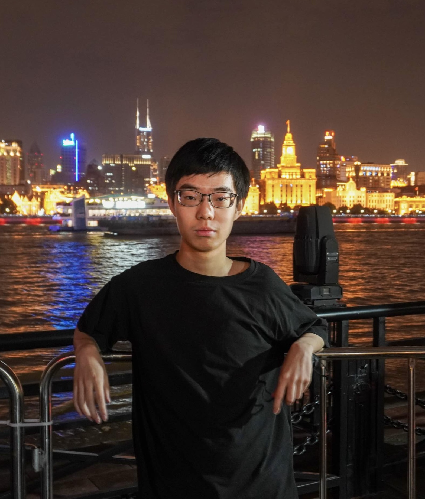

|
 |
Banruo Liu (刘般若)
|
Recent projects
Publications
Bio
Banruo Liu is a first-year Ph.D. Student at the University of Illinois Urbana-Champaign (Siebel School of
Computing and Data Science), advised by Prof. Fan Lai. Prior to that, he got
his B.Eng in Computer Science at Tsinghua University, advised by Prof. Youyou Lu. During his undergraduate years,
he interned at University of Washington, advised Prof. Arvind
Krishnamurthy and Prof. Ratul Mahajan. He also interned at KAUST, advised by Prof. Marco Canini.
Banruo is a computer systems researcher with a focus on machine learning systems.
He has won the Chinese NOI (National Olympiad in Informatics) Bronze Medal in 2018.